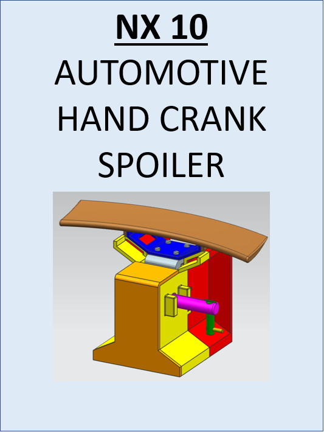
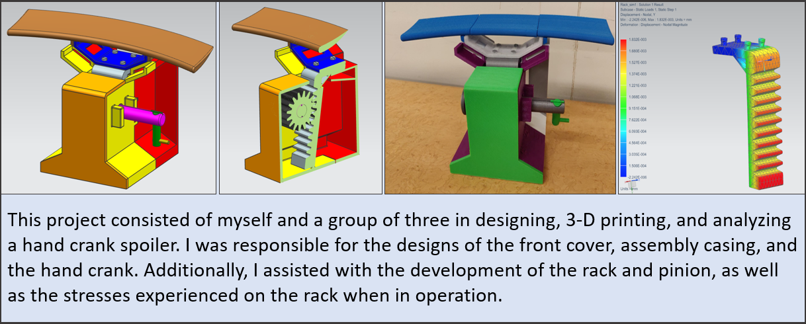
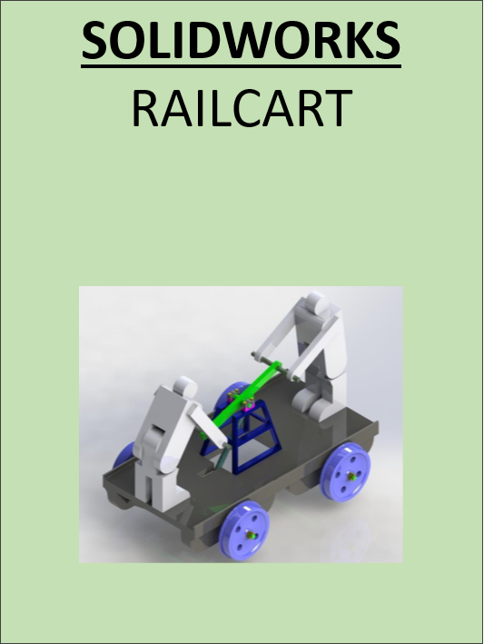
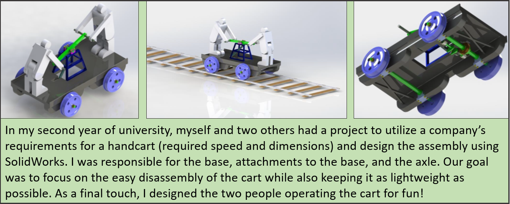
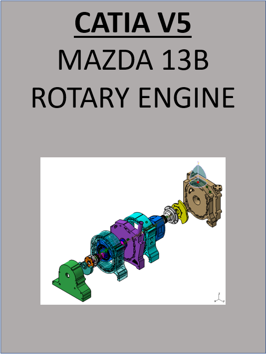
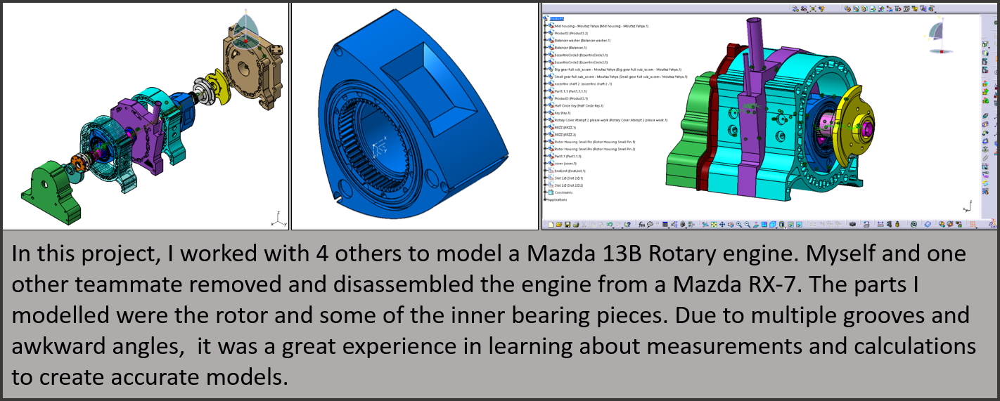
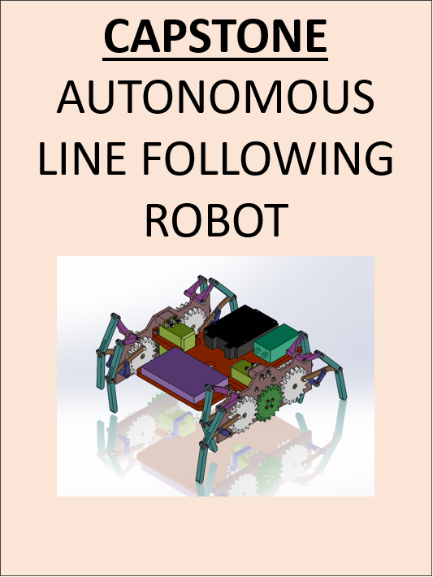
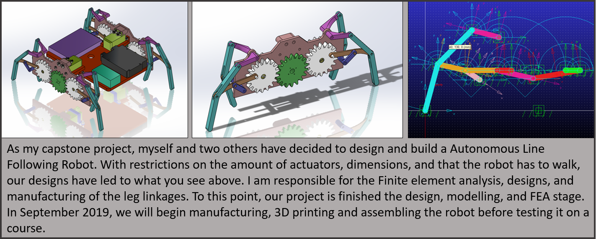
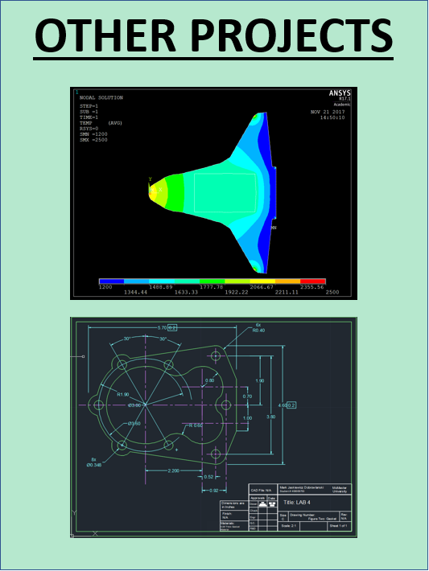
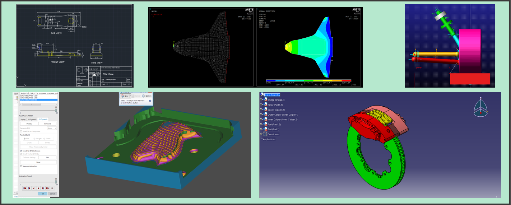

Mark Jaskiewicz Dobrowlanski
A student with a passion for design and innovation
MJD
| Age | 22 |
| Location | Mississauga, ON, Canada |
| Education | Bachelor of Technology |
| Interest | CAD, Skiing, Travel, Cars |
Hello and welcome to my webpage! I hope you enjoy your stay and connect with me after learning
a bit about myself. I have included little snip-bits of info about my experiences, the projects I have been a part of, my resume
and contact information (phone, email, and LinkedIn).
A bit about myself; I am currently an Automotive and Vehicle Engineering Technology student at McMaster University planning on graduating in December 2019. Once I graduate, my goal is to use my skills in design and engineering to find a role in an organization that focuses their efforts on innovation in manufacturing and product design. With previous experience in manufacturing and mechanical design, I have found my passion in the world of engineering.
Please check out my projects and provide feedback! I love to hear what I can improve on.
A bit about myself; I am currently an Automotive and Vehicle Engineering Technology student at McMaster University planning on graduating in December 2019. Once I graduate, my goal is to use my skills in design and engineering to find a role in an organization that focuses their efforts on innovation in manufacturing and product design. With previous experience in manufacturing and mechanical design, I have found my passion in the world of engineering.
Please check out my projects and provide feedback! I love to hear what I can improve on.
My work experience is shown in this section.
Operational Support (Co-op)
-Lafarge Canada-
-Updated health & safety documents and conducted emergency drills
-Tracked production for multiple programs and projects
-Used VBA to update tracking sheets
Mechanical Designer (Co-op)
-Transit Design Group-
-Designed transit lights for GO Transit, Caltrain, and Calidot
-Created models and drawings using SolidWorks
-Updated and verified bills of material with some up to 50 parts
Production Planner (Co-op)
-Cyclone Manufacturing-
-Released production orders for aerospace components
-Entered data from Jobboss to Microsoft AX
-Trained new employees and delegated tasks to teams of up to 3
Production Operator (Co-op)
-Garland Commercial Ranges-
-Assembled industrial kitchen appliances with hand-tools
-Wired units using electrical diagrams
-Worked with teams on an assembly line
Inventory Clerk & Teacher Assistant
-Spirit of Math Schools-
-Organized and set up the inventory room
-Tracked and filed registration for students
-Assisted teachers in a classroom from grades 1-6
If you are interest in learning more about these projects, please scroll down to find my contact information!










Here is my info if you would like to get in touch with me.
You can contact me by email, phone or LinkedIn.
You can contact me by email, phone or LinkedIn.
Resume
m.jasski@outlook.com
Cell Phone
(647)-523-2230
https://www.linkedin.com/in/mark-jd
Built by Mark Jaskiewicz Dobrowlanski - 2019